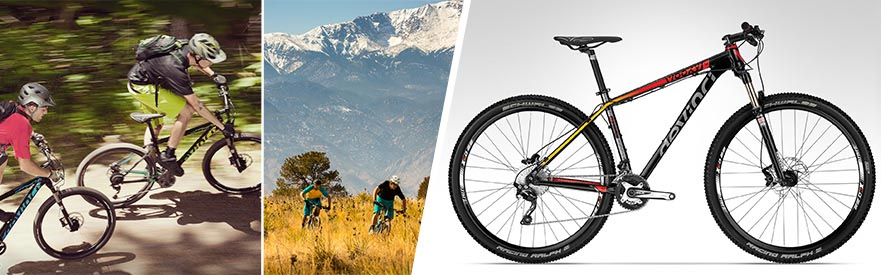
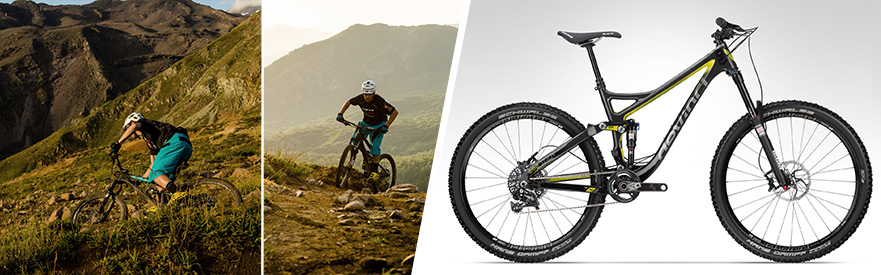
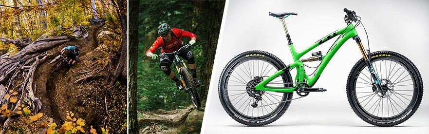
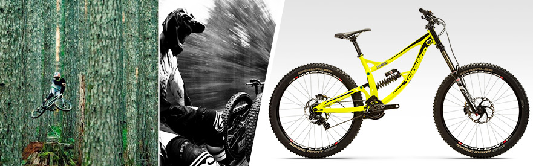

Bikes for Sale
- Cross Country (XC)
-

- Modern XC bikes are trending towards the largest wheel size, 29”. This is the same rim diameter as the 700c road bike size.
- Ultra-lightweight builds (less than 24 lbs. in some cases) with 4.7"/120mm or less of travel make for the lightest mountain bikes you’ll see anywhere.
- Hardtails (front suspension only) can be preferential in this category in some cases.
- Longer chainstays & wheelbases, steep head angles (69° or steeper) as well as longer stems put riders in efficient climbing positions.
- Tires on these bikes are likely to favor reduced weight, efficiency and faster rolling resistance rather than traction, control or durability.
- Trail
- 
- Most trail bikes are now equipped with the "happy medium" 27.5” (also called 650b) sized wheels, although 29ers are making a resurgence in this class and becoming more and more popular as of late.
- Suspension can be anywhere from 4.7"/120mm to 6"/150mm of travel (front and back) with builds taking a balanced approach to strength and weight reduction. Most will weigh around 30 lbs.
- Trail bike geometries are typified by "neutral" head angles (66° or 68°) but vary widely to suit different riding styles.
- Tires on trail bikes will strike a balance between durability, traction and rolling efficiency.
- All Mountain / Enduro
- 
- Similar to trail bikes, the 27.5” wheel size has taken over this category in the industry, but all three wheel sizes exist and longer travel 29ers have recently come into popularity.
- All-mountain bikes have slightly more suspension travel than trail bikes, ranging from 5.5"/140mm to 6.7"/170mm with some high-end builds coming in under 30 lbs.
- Geometry strongly favors descending to climbing. Head angles in the 65°- 67° range can require some finesse when it comes to steep climbs. Long wheelbase and reach, low bottom bracket and slack head angle are key terms when talking about modern All Mountain/Enduro geometry.
- Tires on all mountain bikes are likely to favor aggressive knobs for cornering and traction since the “important part” of the ride is gravity assisted.
- Downhill / Freeride
-

- DH bikes were the longest holdout on 27.5” wheels (from 26"), but have made a solid switch. 29er DH bikes have recently made their way onto the World Cup scene.
- Burly frames sporting 6.7"/170mm - 10"/250mm+ of suspension travel in the rear and 7"/180mm - 8"/200mm in the front with dual-crown forks that resemble something you might see on a motorcycle.
- These bikes tend to be extremely slack (less than 65° head angle) and sport a very low center of gravity (bottom bracket) for confidence on steep terrain and aggressive, brown-pow roosting corners.
- Tires on downhill bikes are geared for traction and durability with 2-ply (think double-thick) casings and even full spiked tread patterns for mud that can find traction in a bucket full of marbles, shrugging off slashes from razor sharp rocks & natural punji sticks.